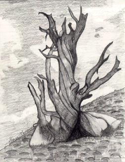

Student Project
Gloria

Bristle Cone Pines grow in elevations between 7,500 - 10,000 feet. They are found in Nevada, Colorado, Utah, Northern New Mexico, and Eastern California. When I see these trees around me I feel very surrounded. These trees are very old and twisted wood textured. They grow to about 20 - 40 feet tall. I hope you get to Nevada so you can see one.
-Gloria
c. Gloria
ALbert Lowry High School
Winnemucca, Nevada USA
Pencil on Paper 9 "X12"
Bristlecone Pine
Latin Name: Pinus Aristata
Age: 4,600 years
Circumference: TBA
Location: Great Basin National Park
Ely, Nevada
 Return to Main Page
Return to Main Page
June Julian jj68@nyu.edu